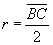
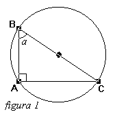
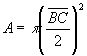
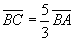
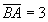
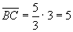
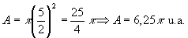

Como o triângulo ABC é retângulo então ele pode ser inscrito em uma semicircunferência cujo diâmetro coincide com a hipotenusa BC (figura 1), portanto o raio da circunferência circunscrita ao triângulo ABC mede metade da hipotenusa:  A área do círculo é dada por: A = p r2 |  |
Substituindo a primeira igualdade na segunda:

IDo item 01 temos que:

e
Portanto: 
Substituindo II em I:

Conclusão: O item 02 é verdadeiro.